The TexText GUI¶
Invoking TexText extension¶
After installation TexText will appear under :
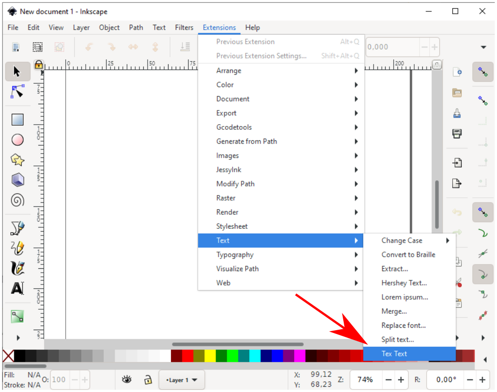
When you select it, a dialog will appear that lets you enter any LaTeX code you want (presumably your formula).
Tip
Once you have opened TexText via the menu entry in an Inkscape session
you can subsequently open it using the keyboard shortcut ALT + Q
(“Previous extension”).
Alternatively, you can specify your own keyboard shortcut, see Defining keyboard shortcut for opening TexText dialog in the FAQ.
Dialog overview¶
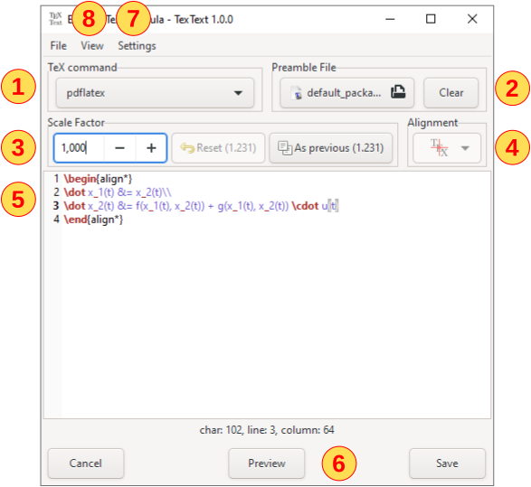
You enter your LaTeX code into the edit box . In the case the the GTK GUI bindings are available it will show you line and column numbers. If you additionally installed GTKSourceView it will also highlight the syntax with colors. You can add any valid and also multi-line LaTeX code. There are additional settings which can be adjusted to your needs:
The TeX command to be used for compiling your code (group box ). Possible options are:
pdflatex,xelatex,lualatex. See section Available TeX compilers for more details.Custom Preamble file (group box )
The scale factor (group box ). See section Scaling of the output.
The alignment relative to the previous version of your code (group box , only available when re-editing your code). See section Alignment of the output.
The coloring of the output using TeX commands or Inkscape settings. See section Colorization of the output.
The default math environment in new nodes (menu ), see section Configuration of the default TeX math-environment.
The appearance of the editor (menu ), see section Configuration of the code editor.
Your LaTeX code and the accompanying settings will be stored within the new SVG node in the document. This allows you to edit the LaTeX node later by selecting it and running the Tex Text extension (which will then show the dialog containing the saved values).
There is a preview button as well, which shortens the feedback cycle from entry to result considerably, so use it! See section Preview button
Available TeX compilers¶
Your LaTeX code can be compiled using three different compilers:
pdflatex, xelatex, lualatex (as long as the corresponding
commands are found by your system). You can select the command in the
combobox . The last two ones are especially useful for using UTF-8
input or if you require Lua commands. Of course you can use UTF-8 input
with the pdflatex command as well as long as you provide
\usepackage[utf8]{inputenc} in your preamble file (see Preamble file).
Some things to be kept in mind:
Place the required lua packages in your preamble file if you want to compile your code with
lualatex.If you use
lualatex/xelatexfor the very first time on your system it may take some time until the fonts are setup properly. During that time TexText might be unresponsive.Windows:
xelatextends to be very slow on Windows machines, see this post on Stackexchange.
Preamble file¶
Be aware of including the required packages in the preamble file if you use special commands in your code that rely on such packages. The preamble file can be chosen by the selector . The default preamble file shipped with TexText includes the following packages:
\usepackage{amsmath,amsthm,amssymb,amsfonts}
\usepackage{color}
Basically, your LaTeX code will be inserted into this environment:
\documentclass{article}
% ***preamble file content***
\pagestyle{empty}
\begin{document}
% ***Your code***
\end{document}
This will be typeset, converted to SVG and inserted into your Inkscape document.
Scaling of the output¶
In most of the cases you will need to adjust the size of the produced SVG output to match the conditions of your drawing. This can be done by two methods:
After compilation adjust the size of the SVG output using the mouse in Inkscape. You should lock the width and height to keep the proportion. Be careful to not break the group!
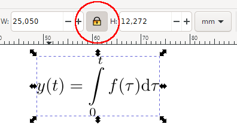
Before compilation you specifiy a scale factor in the spinbox of the groupbox .
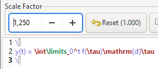
Both methods are fully compatible. If you scale your SVG output in Inkscape the numerical value of the spinbox will be adjusted appropriately when you open TexText on that node later. In both cases the scale factor is preserved when you re-edit your code.
A scale factor of 1 means that the output is sized as it would appear in
a regular LaTeX document, i.e., a font size of x pt in LaTex matches
that of x pt in Inkscape:

There are two additional buttons in the groupbox :
Reset: This button is only available when re-editing existing TexText nodes. It resets the scale factor to the value the code has been compiled with the last time. This is useful when playing around with the scale factor and decide to not change the scale factor.
As previous: This button sets the scale factor of the currently edited node to the value of the node which has been edited previously. This is useful when you found a scale factor to be suitable and want to apply this scale factor also to any new or existing nodes you open for editing.
If you have re-sized the SVG output in Inkscape without keeping the proportions the re-compiled output will be placed with correct proportions according to the alignment.
Alignment of the output¶
When you edit existing nodes it is likely that the size of the produced
output will change, for example if you modify the input $\sin(x)$ to
$\int\sin(x)\text{d}x$. The entries of the spinbox determine how
the new node is aligned relatively to the old node. The default
behaviour is middle center, i.e. the middle of the new node is placed
on the middle of the old node. Available options are:
|
|
|
|
|
|
|
|
|
|
|
|
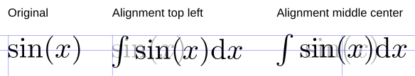
Of course, the content of the groupbox is only available when editing existing nodes.
Colorization of the output¶
There are two ways for colorization of the output:
The most natural way is to select the produced SVG output in Inkscape and set the fill and the contour color to the same value according to your needs. When you re-compile your node this color will be persevered as long as you do not use any color specifications in your LaTeX code. You can also colorize characters individually be selecting them with the mouse after having pressed F2. Be careful not to break the group.
Caution
Individual colorization of single characters done in Inkscape will not be kept after re-compilation.
Alternatively, you can use LaTeX commands like
\textcolorin your code to colorize the node according to your needs. If you use such commands any colorization done by Inkscape will be lost after re-compilation. This method is the recommended one if you would like a character wise colorization of your output.
Preview button¶
When pressing the Preview button your code will be compiled and the result
is displayed as an image in the area below the LaTeX code input field. If the
output extends a certain size it is displayed scaled so it fits into the available
area. You can double click into the preview image to obtain the result in original
size. Then, you can use the horizontal and vertical scroll bars to navigate along
your result. Double clicking again will bring you back to the scaled version of the
output.
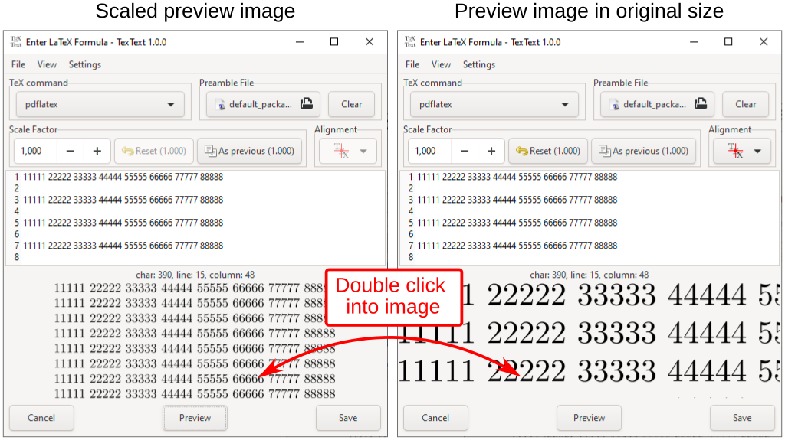
If you are using a darkmode theme you can select the option White preview background
option from the View menu :
{kind=link}
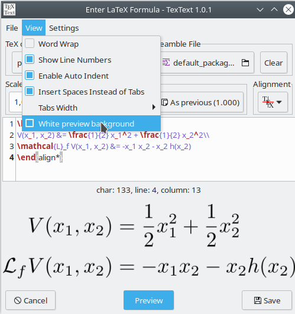
{kind=link}
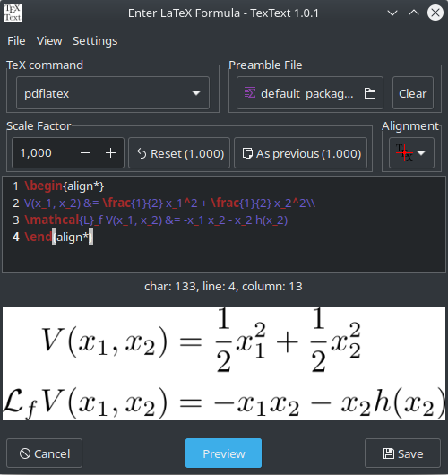
Finally, click the Save button to insert the compiled code into your document.
Note
This feature is not available in the Tkinter GUI!
Configuration of the default TeX math-environment¶
You can open the Settings menu and then New Node Content
to define which environment should be selected by default when creating new nodes.
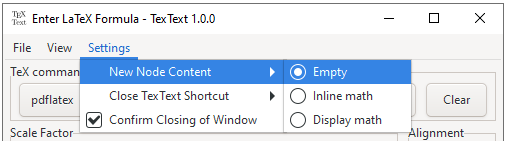
You have the following options:
Empty: The code editor is empty.Inline math: The code editor is filled with$$for typesetting an inline math expression.Display math: The code editor is filled with$$$$for typesetting a display math expression.
(Reminder on the difference between inline and display math)
Note
This feature is not available in the Tkinter GUI!
Selecting the shortcut for closing the TexText window¶
New in version 0.11.0.
In the Settings menu you can configure by Confirm Closing Window if TexText should ask for
confirmation to close the window in case you made changes to your text. Furthermore, under Close TexText Shortcut
you can select a shortcut for closing the TexText window.
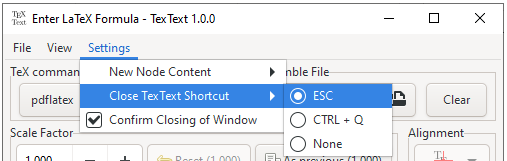
You have the following options:
Escape(default)CTRL + QNone: No shortcut active. Depending on your operating system a standard shortcut maybe available (e.g.ALT+F4on Windows).
Note
This feature is not available in the Tkinter GUI!
Configuration of the code editor¶
You can open the View menu which offers some possibilities
to configure the code editor:
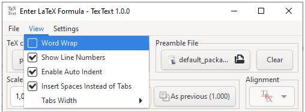
Word Wrap: If this option is checked long lines are wrapped automatically to window width.Show line numbers: If this option is checked line numbers are printed on the left hand side of the editor.Enabled auto indent: If this option is checked current indentation is preserved when breaking a new line (this is not an intelligent code dependent indentation feature).Insert spaces instead of TabsIf this option is checked each time you press theTabkey a number of spaces as defined inTabs Widthis inserted instead of a tabulator character.
Note
The last three options are only available if you have GTKSourceView installed
together with GTK (see installation instructions TexText for Inkscape 1.0 on Linux,
TexText for Inkscape 1.0 on Windows, TexText for Inkscape 1.0 on MacOS)